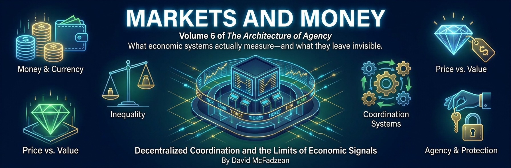

Volume 6 — Markets, Money, and Prosperity

Economics inherits its foundations from the volumes before it: value is agent-relative, truth is conditional, and coercion is a structural category rather than a synonym for an unwelcome outcome. What this volume adds is the machinery of coordination: how subjective valuations become prices, how prices interact with money and capital, and how institutions expose or conceal error. The long decline in extreme poverty is part of that story, but its pace, distribution, and causes must be examined rather than credited to a single label.
The argument runs in seven parts and a coda. Part I builds the foundations: exchange and gifts, the distinctions among value, wealth, capital, money, and currency, what monetary systems coordinate, what prices reveal and hide, and attention as a scarce allocation problem. Part II tests standard indictments—externalities, poverty, public goods, inequality, tariffs, monopoly—while applying the same causal burden to market and state action. Property, monetary policy, and regulatory capture recur as mechanisms, not as an exhaustive explanation of economic failure. Part III turns to Bitcoin and competing consensus designs: what protocol rules can and cannot prevent, how proof-of-work and proof-of-stake distribute different powers, and where an organism metaphor illuminates or overstates the result.
Part IV is the constructive center: incentives, costly signals, prediction markets, insurance, and liability design, including a memoir of building an early web-based prediction market in 1994. Part V examines progress metrics, failed forecasts, and a model-dependent nuclear counterfactual. Part VI treats low fertility and parenthood’s unequal costs as multicausal institutional problems. Part VII asks how information production might be funded without treating intellectual-property rules as natural rights, then turns the volume’s own forecasting discipline on the possibility that advanced AI removes human labor’s scarce complements. The coda states the boundary: coordination mechanisms can expose errors, but they cannot decide standing or legitimate authority from prices alone.
The foundations live in the earlier volumes — the physics of agency, conditional truth, and agency-centered ethics — and this volume cross-links them throughout; the governance questions these markets leave open are the business of the volume on liberty and Axiocracy.
This volume is in author review. Its theoretical claims, empirical findings, counterfactual models, policy arguments, and rhetorical illustrations should remain visibly distinct.
Chapters
Part I — Value, Price, Money, and Capital
- The Discipline of Value review
Value is relational, grounded in tradeoffs among alternatives, and attributable only to agents who want, choose, and sacrifice. Informed and voluntary sacrifice can reveal a preference ordering, but duress, misinformation, poverty, compulsion, and constrained alternatives weaken that evidence. Scalar comparison additionally requires a chosen numeraire, and not every tradeoff admits a unique, stable embedding in one common denominator. Voluntary exchange occurs when each party prefers what it receives to what it gives, so equal denomination does not imply equal private motive. A gift is not an exchange because it lacks reciprocal consideration, yet it remains intelligible as voluntary action expressing the giver's priorities. Coercion is structurally different: it obtains compliance through a credible conditional threat of harm rather than mutually preferred transfer. Wealth concerns arrangements of valuable capacity, not merely money balances, and economic reasoning stays honest only by keeping price, moral ranking, reservation value, consent, and coercion in their proper frames.
- The Coat and the Ticket review
Value is the usefulness, desirability, or importance of something to an agent; wealth is the stock of valuable assets and capacities an agent controls. Capital is wealth deployed to produce more wealth, while money is a transferable claim and accounting layer that enables exchange across time and counterparties. Currency is a particular monetary unit and system; credit extends present purchasing power against future settlement, and debt is the corresponding outstanding claim. The coat-check image keeps the layers straight: currency and monetary balances are tickets, while goods, skills, infrastructure, trust, and productive capacity are coats. Printing or expanding claims can mobilize idle resources under some conditions, but it does not manufacture unlimited real capacity. Prices compress valuation into a common unit without becoming identical to value, and monetary wealth estimates remain assumption-dependent. Prosperity grows by producing and preserving valuable capacity, not by mistaking tickets, spending, liquidity, nominal gains, or financing for the coats they may—or may not—command.
- What Is Money? review
Currency is the common denominator of market exchange: a shared scalar unit that lets unlike, agent-relative valuations become comparable without making them identical. Fungibility, sufficiently wide acceptance, and easy quantifiability support salability and comparison across a network. Money can operate through coins, commodities, bank deposits, credit ledgers, or cryptographic records, and historical evidence permits several origin paths rather than one necessary progression from barter to coin. A price is an exchange ratio expressed in the denominator, not a measurement of intrinsic worth. Modern Monetary Theory correctly emphasizes that a sovereign issuer differs from a household and faces real-resource and inflation constraints rather than a simple nominal financing limit. The remaining dispute concerns institutional knowledge, distribution, expectations, currency demand, political correction, and whether fiscal steering can respect those constraints in time. Money coordinates claims and can mobilize idle capacity; creating additional tickets cannot guarantee additional coats, productive capacity, or trust.
- The Price Illusion review
A market price is a convergence point inside overlapping reservation ranges under particular conditions, not a measurement of an object's intrinsic value. In an informed voluntary bilateral exchange, the seller accepts the payment over the good and the buyer accepts the good over the payment; the agreed number reports those inequalities while hiding motives and valuation magnitudes. Auctions, urgency, taxes, market power, regulation, and coercion can change what the price reveals. Anything valued can be priceable in principle, including a refusal represented by an infinite reservation price, although explicit pricing can damage values partly constituted by remaining outside ordinary trade. Money reduces friction as a medium for expressing exchange ratios; it does not measure generosity, love, creativity, or human worth. Failure to attract voluntary funding is defeasible evidence that a project or mechanism has not assembled sufficient effective support, not proof of valuelessness when free-riding, liquidity, missing beneficiaries, or transaction costs intervene. Prices are indispensable inequality reports, not universal verdicts.
- Attention Is an Economy review
Attention is the first economy an agent inhabits: scarce cognitive capacity must be allocated among more possible signals, memories, tasks, and affordances than any mind can process. Salience is what stands out, relevance is what matters in context, and value is what an agent cares about preserving or becoming; the three can diverge sharply. Commercial platforms enter this internal economy by optimizing badges, novelty, outrage, status, and intermittent reward to outbid existing commitments. Cognitive arbitrage lets the platform capture engagement while the agent pays in reconstruction cost, broken concentration, and diminished long-horizon control. Executive function governs scarce cognitive capital by protecting relevance structures and refusing bids that do not serve endorsed ends. Meditation, reflection, deep work, and environmental design can retrain the allocation mechanism without making attention an infallible meter of value. Freedom begins with allocation because captured attention can foreclose admissible futures one decision at a time.
Part II — Market Failures and Institutional Failures
- Capitalism on Trial review
Competitive market exchange means voluntary transfer under contestable entry and rules that attach costs to their causes; actual capitalist economies mix firms, states, households, public infrastructure, privilege, and coercive taxation. Nine serious objections concern short-termism, externalities, information asymmetry, compounding inequality, public goods, boom and bust, moral erosion, addictive consumption, and winner-take-all concentration. Each identifies a possible mechanism, but none yields one automatic diagnosis or remedy. Secure ownership, liability, reputation, open entry, transparent information, monetary discipline, and meaningful exit can correct some failures, while transaction costs, private power, behavioral exploitation, coordination problems, and historical exclusion can defeat those corrections. A market failure does not validate a state intervention by definition, and the presence of a price does not prove voluntariness or efficiency. War profiteering and protected rent cannot be excused as voluntary exchange, while regulation cannot be dismissed merely because it is collective. The defensible verdict is comparative: prefer institutions that expose error and make decision-makers bear imposed costs.
- The Poverty Myth review
Poverty is the material condition from which human societies begin; wealth is the anomaly produced through invention, specialization, capital accumulation, trade, public health, education, infrastructure, institutions, and state capacity. Long-run evidence shows an immense fall in extreme poverty, although progress has slowed and no single mechanism can claim the entire causal result. Inequality is a difference between people, while poverty is deprivation that constrains a person's welfare, functional capacity, and viable options. “Late-stage capitalism” bundles genuine problems into an unmeasured prediction of terminal decline, confusing cultural pessimism with an economic lifecycle. Abundant consumer variety reveals decentralized preference discovery, but healthcare combines emergency demand, information asymmetry, patents, restricted entry, third-party payment, risk pooling, and safety requirements that make it a difficult institutional design problem rather than a clean market control. Market institutions helped build unprecedented productive capacity without making every current rule fair or every exclusion harmless. The question needing explanation is how prosperity is created and extended, not who manufactured humanity's starting condition.
- The Myth of Underprovision review
Public-goods theory identifies a coordination problem, not an automatic mandate for state provision. Non-rival consumption, costly exclusion, free-riding, and difficulty capturing benefits can weaken private funding, but the magnitude depends on the good, benchmark, scale, institutions, and technology. British lighthouses illustrate mixed provision: private operation combined with legally backed port dues and monopoly grants, defeating categorical impossibility without eliminating the free-rider problem. Clubs, bundling, philanthropy, prizes, repeated interaction, assurance contracts, micropayments, and cryptographic access can relax underprovision conditions; diffuse benefits and high transaction costs can preserve them. Voluntary payment reveals what resourced participants will fund through the available mechanism, while nonpayment can reflect free-riding, distrust, poverty, or failed coordination rather than indifference. Taxation carries coercive and administrative costs, yet voluntary provision does not prove that every important benefit was realized. Sound comparison defines the benchmark, estimates the gap, inventories alternatives, and evaluates public and private remedies under symmetric assumptions about knowledge, capture, enforcement, and correction.
- Wealth Is Not a Pile review
Large fortunes usually consist of claims on operating firms, real estate, intellectual property, and other assets rather than idle currency hidden in a vault. That accounting fact matters for taxation and liquidation but does not settle acquisition, control, externalities, political power, or the counterfactual use of resources. Investment distributes payments through workers and suppliers while concentrating authority over what gets built; either effect can create or destroy valuable capacity. The right question about a trillionaire is what the controlled wealth does under which rules, risks, liabilities, and avenues of correction. Inequality is disparity, whereas poverty is deprivation that materially restricts agency; one does not establish the other by definition. Concentrated capital can support long-horizon, high-variance projects and can also magnify error, dependency, rent extraction, bargaining asymmetry, and political influence. Redistribution can finance consumption that builds future capability, while coercive means still require separate justification. Wealth is not necessarily a pile withheld from the poor, and deployment is not automatically a public benefit.
- The Tariff Illusion review
Tariffs commonly raise domestic prices, redirect trade, protect selected producers, and burden downstream users and consumers. Five recurring rationales invoke domestic jobs, strategic capacity, retaliation, government revenue, and political patronage; only specified resilience or security needs can justify sacrificing trade gains, and broad protection remains vulnerable to capture. Ricardo's comparative-advantage result survives under its assumptions without promising that every person gains, adjustment is costless, or dependencies have no option value. Tariffs persist because benefits are concentrated, visible, and organized while larger costs are diffuse, counterfactual, and politically quiet. China's post-1978 rise occurred through a mixed political economy combining private ownership, competition, trade, foreign investment, infrastructure, industrial policy, state firms, and one-party rule. Market liberalization is central to the transformation, but the chronology is not a controlled experiment isolating one cause. Calling the skyline a triumph of communism equivocates between Party governance and suppressed market production; causal analysis must trace mechanisms rather than credit visible outcomes to political labels.
- Monopoly Hypocrisy review
A territorial state judging private monopoly must disclose its own exclusive powers over taxation, legislation, policing, and final adjudication. The reciprocity test does not make private dominance harmless or invalidate antitrust; it requires regulator and regulated to face the same questions about contestability, imposed costs, due process, and meaningful exit. Network effects, bottlenecks, switching costs, contractual lock-in, collusion, tying, and acquisition can make corporate exit nominal, while public authority can also suppress competition and protect incumbents. Minimum-wage rules likewise prohibit exchanges through a credible conditional threat of harm, but their economic effects depend on the floor, labor demand, monopsony, substitution, enforcement, and time horizon. Higher earnings for retained workers must be weighed against hours, hiring, prices, entry, and unseen jobs that never form. Voluntary agreement is not automatically legitimate inside domination, and protective intent does not validate coercion. Symmetric evidence, appeal, and accountability are the safeguard against both private exclusion and public self-exemption.
Part III — Ungovernable Money
- Ungovernable by Design review
Bitcoin separates deterministic protocol validity from semantic intent. Keys, hashes, scripts, transaction structure, and timing leave residual channels for encoding information; restrictions can raise cost or prevalence without proving every covert channel closed. Consensus can validate observable structure but cannot infer private meaning or settle most legal and contextual judgments without institutions outside the protocol. Censorship resistance is therefore graded: strong against unilateral semantic control inside consensus, weaker at exchanges, network access, mining, software distribution, interfaces, and users subject to law. Proof-of-work consumes substantial electricity to make block production and historical revision costly without a central issuer. Energy use is a physical fact, while “waste” is an evaluative comparison involving security, emissions, grid effects, alternative infrastructure, and counterfactual services. Mining can monetize curtailed or stranded energy and can also compete with other loads or sustain fossil generation. Nakamoto consensus constrains discretion inside one layer; it does not abolish governance, interpreters, concentration, or capture at the edges.
- The Fork and the Merge review
Decentralization concerns how authority, failure, and correction are distributed, not whether a network uses the label. Ethereum's 2016 DAO fork showed that social coordination could override ledger finality under exceptional moral pressure, while the Merge replaced proof-of-work with proof-of-stake and made slashable internal capital the security resource. Stake can compound into validator influence, custody and delegation can concentrate control, and capital-weighted governance remains exposed to sanctions, taxation, financial institutions, and low participation by small holders. Proof-of-work also concentrates through mining pools, hardware, energy systems, and jurisdictions, and Bitcoin still relies on implementers, nodes, miners, users, and social responses to exceptional faults. The comparison is therefore about the frequency, concentration, and consequence of discretion rather than its presence in only one design. “You cannot decentralize capital” is a warning, not an impossibility theorem. Proof-of-work is preferred here for adversarial monetary neutrality, conditionally on measured contestability rather than labels alone.
- The Cybernetic Ghost of Satoshi review
Bitcoin can be read through several deliberate metaphors at once: organism, egregore, artifact, machine, and recurring ritual. Mining consumes energy to maintain a boundary; nodes validate and propagate records; incentives recruit heterogeneous participants into a pattern no participant owns whole. The organism does not literally live, the egregore does not secretly think, and the protocol is not a sovereign agent with authored purposes. Proof-of-work nevertheless gives the network metabolism-like cost, selection-like pressure, and a persistent structure reconstructed through silicon, energy, code, belief, and coordination. Bitcoin's narrow rules and costly history distinguish it from proof-of-stake rivals without eliminating mining concentration, development authority, exchanges, law, or social governance. Satoshi's disappearance strengthens the image of a machine-shaped sovereignty by removing an ordinary founder from the center, but it proves no supernatural origin or predetermined destiny. The cybernetic ghost names the atmosphere and durability of a distributed protocol pattern, not a hidden chooser haunting civilization.
Part IV — Mechanism Design
- The Metagame of Incentives review
An incentive is a patterned difference in expected payoff that changes which actions become attractive inside a game. Nested games can reward different objectives, creating misalignment when performance at level L degrades coherence, stability, or persistence at level L+1. Five recurrent patterns are local versus global, short-term versus long-term, signaling versus substance, coalition versus truth, and survival versus stated purpose. Misalignment is a persistent risk rather than a universal default or a hidden institutional chooser. It can cascade across levels, lock a system into a bad equilibrium, or run away when a metric becomes a target and every participant must escalate to remain competitive. Diagnosis compares the game a system claims to play with the game its rewards select, then identifies beneficiaries, excluded parties, time horizons, and conditions for correction. Reflective authorship includes choosing which gradients govern action and redesigning incentives so local success does not consume the larger game.
- Ornament and Advantage review
Costly signals work because their expense once made them difficult to fake: the peacock's tail and the diploma both served as handicaps that revealed underlying capacity. Generative AI makes polished artifacts cheap, voiding the old warranty without abolishing merit. Specification, taste, diagnosis, repair, and especially accountability remain scarce, although no fixed task is permanently protected from automation. Credentials must migrate from artifact possession toward demonstrated control under challenge, consequence, and continuity. A challengeable artifact can be explained, altered, defended, repaired, deployed, and maintained; charisma, pedigree, or a synthetic process trace cannot substitute for those tests. Institutions need open challenge lanes so outsiders can force attention without passing a prior status gate. Apprenticeship must also survive after junior production becomes uneconomic, because people learn durable judgment by making and repairing imperfect work. Authority should follow accountable control and liability rather than polish, while artifacts remain public, portable evidence rather than self-authenticating proof.
- Mechanisms for Honest Values review
Mechanisms can make claims more honest by attaching consequences to what people report. Harberger insurance links self-assessed value to both premium and covered payout: overstatement costs more, while understatement limits recovery, without discovering an object's true intrinsic worth. Prediction markets similarly make probabilistic confidence scoreable by rewarding correction and charging for error. Market prices aggregate conditional judgments under incentive pressure, not prophecy or certainty, and their evidential quality depends on resolution rules, liquidity, participation, fees, subsidies, manipulation, and comparison forecasts. The 1994 Calgary experiment showed that a web interface and even play-money scoring could sharpen claims, but it did not establish universal predictive superiority without a benchmark and evaluation protocol. Thin markets can display authoritative-looking numbers with weak signal. Harberger valuation and prediction markets are candidate epistemic infrastructure whose strength is bounded by their rules, resources, alternatives, and safeguards; whether they improve clarity must itself remain testable.
- Engineering Morality into the Machine review
Institutional incentives around Canada's Medical Assistance in Dying program require monitoring because scarce care, uneven alternatives, workload, or funding rules could make an offered death easier to obtain than a tolerable life. This is a risk hypothesis, not a finding that clinicians or budgets optimize for death. Candidate safeguards include budget neutrality, Relief-First care, a Counterfactual Care Guarantee, independent advocacy, adversarial assessment, transparent dashboards, audit, balanced liability, and sunset clauses, all subject to clinical, legal, disability-rights, and patient evidence. Legalization is likewise a change in constraints, not a promise that every downstream measure improves. Harm means a material setback relative to an appropriate baseline, while influence, permission, regret, and coercion remain distinct. Sports-betting systems can engineer traps through reinforcement, leverage, and loss-chasing that erode recovery capacity without making every wager involuntary. Agency-preserving constraints should target capture mechanisms and third-party harms rather than criminalize competent adults or treat incentives alone as a complete control system.
Part V — Progress, Forecasts, and Energy
- Great Progress review
Child mortality fell from roughly one in three in many populations around 1800 to below one percent in wealthy countries by 2015, with large though unequal gains elsewhere. Life expectancy at birth is a powerful summary of mortality and material capacity, not a uniquely sufficient civilizational score or substitute for freedom, disability, happiness, distribution, and cultural richness. Modern prosperity includes invisible luxuries—sanitation, antibiotics, refrigeration, reliable energy, rapid information—that even ancient rulers could not command. A proposed four-part progress stack combines scientific method, concentrated energy, cheap reproduction of information, and institutions for capital formation. Sending that stack to Rome is a dependency map rather than a defensible historical forecast, because metallurgy, slavery, literacy, prices, politics, and resistance could still defeat it. Trends are not laws, and existential risks remain genuine model uncertainty. A dated personal forecast assigns 75% Credence that global life expectancy at birth will be higher in 2051 than in 2026, making optimism a falsifiable calibration rather than a destiny claim.
- Lessons From Peak Oil review
M. King Hubbert correctly forecast a U.S. oil-production peak near 1970, but near-term global collapse forecasts overextended a model whose surrounding variables were adaptive. Proved reserves are economically recoverable quantities shaped by geology, technology, price, regulation, and confidence, not a fixed count of underground atoms. Four recurring errors drove the failed extrapolation: static resource models, linear trends, ignored price feedback, and discounted human adaptability. A disciplined forecast asks whether the resource is truly fixed, which prices and substitutions respond, what innovations become profitable, how demand changes, and which time horizon and failure conditions make the claim testable. Fracking, horizontal drilling, enhanced recovery, efficiency, and alternatives invalidated specific forecasts without making oil infinite or precaution irrational. Some threats remain resistant to price feedback because harms arrive too late, cross borders, or become irreversible before adaptation. Skepticism therefore means modeling feedback and failure conditions, not assuming every warning is false or every system will innovate in time.
- The Nuclear Counterfactual review
The slowdown of U.S. nuclear construction after the 1970s involved public fear and regulation alongside cost overruns, interest rates, utility finance, demand forecasts, accidents, management, and competing generation. An illustrative counterfactual assumes that a nuclear-first path displaces 30% of roughly 125,000 TWh of fossil generation over five decades, or 37,500 TWh. At stipulated rates, five ledgers yield 1.5 million avoided premature deaths valued at $15 trillion, 26 gigatons of avoided CO₂ valued near $2.6 trillion at the selected midpoint, $2.25 trillion in electricity savings, and explicit $2 trillion and $3 trillion placeholders for geopolitics and lost industry. The resulting roughly $25 trillion total is scenario arithmetic, not a conservative empirical estimate or confidence interval. Displacement, epidemiology, VSL, carbon price, construction, overlap, and alternatives remain load-bearing assumptions. Nuclear and anti-nuclear positions both owe complete-system comparisons covering reliability, construction, waste, proliferation, pollution, climate, transmission, storage, finance, and institutional execution.
Part VI — Prosperity and Family Formation
- The Prosperity Paradox review
Fertility has fallen across many prosperous societies as income, education, urbanization, contraception, child survival, and women's opportunities changed; the OECD average declined from 3.3 in 1960 to 1.5 in 2022. Several mechanisms can contribute: higher opportunity costs, greater investment per child, a shift from household asset to dependent, delayed partnership, housing constraints, work institutions, norms, infertility, and digital sociality. Optionality is a proposed unifying mechanism: prosperity makes reversible careers, relationships, locations, and entertainments easier while children require durable, embodied, irreversible commitment. It does not prove that one civilization has chosen sterility or that cash, housing, and childcare never bind. “Mortgage before maternity” describes a cultural and policy-supported readiness threshold, not a biological necessity or a single-cause account. No person owes children to a demographic aggregate, and reproductive coercion cannot preserve a voluntary civilization. Remedies remain voluntary and mechanism-specific: housing liberalization, family-compatible work, binding communities, persuasion, philanthropy, immigration, and adaptation all require evidence rather than emergency license.
- The Loaded Dice of Parenthood review
Aggregate earnings differences are not a direct meter of discrimination alone. Three layers can contribute: gestation, childbirth, recovery, and some feeding create a biological constraint; early care produces a continuity spillover; households then reach equilibria over who absorbs interruption and who protects wage continuity. Biology can load the dice without determining the outcome, and choices made under different options, bargaining positions, norms, employers, and institutions can tilt a distribution. High-value work often rewards deployable time—stable attention, predictable energy, responsiveness, and low interruption variance—while wage accounts record domestic care at zero despite its value. Subsidies and leave can redistribute or alter costs, but no policy abolishes economic cost by moving it to taxpayers, workers, employers, or future payers. The Structural Asymmetry Principle states that when biological and institutional constraints create asymmetric interruption, households and employers may respond with specialization that compounds into persistent earnings differences. The tilt establishes neither discrimination nor free consent; both require separate evidence.
Part VII — Information and the AGI Boundary
- The End of Intellectual Property review
Information is usually non-rival in use even though creation, secrecy, attribution, discovery, implementation, and early access remain scarce. Intellectual property is therefore an enforceable policy bargain that constructs time-limited exclusion rather than a natural fence around an object. Its legitimacy depends on whether specified scope and duration induce enough creation or disclosure to outweigh access barriers, litigation, deadweight loss, administration, follow-on restrictions, and coercive enforcement. Digital copying makes perfect exclusion infeasible without making enforcement causally irrelevant; streaming shows that licensing, convenience, and new payment models can still change behavior. Open source, Creative Commons, fashion, cuisine, and comedy demonstrate alternatives to strong exclusion without proving that every sector funds itself the same way. Advertising preserves zero-precommitment access but can reward surveillance and attention capture; subscriptions, patronage, states, and volunteer labor carry different corruptions. Shorter exclusion, broader reuse, constrained ads, and policy-driven micropayments are favored possibilities whose comparative performance remains empirical.
- AGI Economics review
Ricardo's comparative-advantage theorem remains valid: parties with scarce capacities and differing opportunity costs can gain through specialization even when one has an absolute advantage in every modeled task. The theorem does not guarantee human wages if capable machine labor becomes cheaply replicable across most tasks. Compute, energy, chips, capital, data, and deployment can remain scarce and preserve opportunity costs, so human economic displacement is conditional rather than established. Humans also own assets, vote, bargain, create demand, define law, and may control deployment, making the horse analogy incomplete. Authentic human production retains a premium only if future valuers care about provenance; intelligence alone does not supply that preference. Economic irrelevance can create dependency and political vulnerability without entailing extinction absent additional premises about machine agency, resources, conflict, institutions, and values. Preserved human productive autonomy, strategic resource control, alignment, ownership, governance, and enforceable standing must do work that Ricardo's algebra cannot.
Coda — Coordination Is Not Salvation
- Coordination Is Not Salvation review
Prices compress effective demand under a distribution of resources, rights, information, and alternatives; money compares claims, capital carries resources across time, and markets test plans against participation. These mechanisms coordinate dispersed knowledge without becoming moral oracles. Prices can reveal scarcity while concealing coercion, externalized costs, missing markets, or people unable to bid, and profit can reward production, bottleneck control, privilege, or mixtures of them. Decentralized entry, exit, loss, and revision make many errors discoverable only where participation and correction remain meaningful. Property, liability, stable money, competition, and revisable procedure can expose mistakes, but culture, geography, technology, public investment, state capacity, discrimination, war, luck, and history also shape outcomes. Economics can compare mechanisms under stated goals; it cannot decide from price alone whose consent is valid, which harms may not be traded, or who has authority to coerce. Markets, states, and communities all fail. Coordination is a tool of agency, not salvation from judgment.